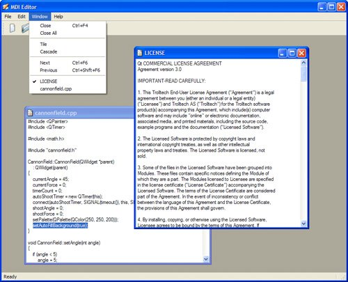
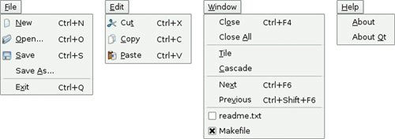

Multiple Document InterfaceApplications that provide multiple documents within the main window's central area are called multiple document interface applications, or MDI applications. In Qt, an MDI application is created by using the QWorkspace class as the central widget and by making each document window a child of the QWorkspace. It is conventional for MDI applications to provide a Window menu that includes some commands for managing the windows and the list of windows. The active window is identified with a checkmark. The user can make any window active by clicking its entry in the Window menu. In this section, we will develop the MDI Editor application shown in Figure 6.16 to demonstrate how to create an MDI application and how to implement its Window menu. Figure 6.16. The MDI Editor applicationThe application consists of two classes: MainWindow and Editor. The code is on the CD, and since most of it is the same or similar to the Spreadsheet application from Part I, we will only present the new code. Figure 6.17. The MDI Editor application's menusLet's start with the MainWindow class.
MainWindow::MainWindow()
{
workspace = new QWorkspace;
setCentralWidget(workspace);
connect(workspace, SIGNAL(windowActivated(QWidget *)),
this, SLOT(updateMenus()));
createActions();
createMenus();
createToolBars();
createStatusBar();
setWindowTitle(tr("MDI Editor"));
setWindowIcon(QPixmap(":/images/icon.png"));
}
In the MainWindow constructor, we create a QWorkspace widget and make it the central widget. We connect the QWorkspace's windowActivated() signal to the slot we will use to keep the window menu up to date.
void MainWindow::newFile()
{
Editor *editor = createEditor();
editor->newFile();
editor->show();
}
The newFile() slot corresponds to the File|New menu option. It depends on the createEditor() private function to create a child Editor widget.
Editor *MainWindow::createEditor()
{
Editor *editor = new Editor;
connect(editor, SIGNAL(copyAvailable(bool)),
cutAction, SLOT(setEnabled(bool)));
connect(editor, SIGNAL(copyAvailable(bool)),
copyAction, SLOT(setEnabled(bool)));
workspace->addWindow(editor);
windowMenu->addAction(editor->windowMenuAction());
windowActionGroup->addAction(editor->windowMenuAction());
return editor;
}
The createEditor() function creates an Editor widget and sets up two signalslot connections. These connections ensure that Edit|Cut and Edit|Copy are enabled or disabled depending on whether there is any selected text. Because we are using MDI, it is possible that there will be multiple Editor widgets in use. This is a concern since we are only interested in responding to the copyAvailable(bool) signal from the active Editor window, not from the others. But these signals can only ever be emitted by the active window, so this isn't a problem in practice. Once we have set up the Editor, we add a QAction representing the window to the Window menu. The action is provided by the Editor class, which we will cover in a moment. We also add the action to a QActionGroup object. The QActionGroup ensures that only one Window menu item is checked at a time.
void MainWindow::open()
{
Editor *editor = createEditor();
if (editor->open()) {
editor->show();
} else {
editor->close();
}
}
The open() function corresponds to File|Open. It creates an Editor for the new document and calls open() on the Editor. It makes more sense to implement the file operations in the Editor class than in the MainWindow class, because each Editor needs to maintain its own independent state. If the open() fails, we simply close the editor since the user will have already been notified of the error. We don't need to explicitly delete the Editor object ourselves; this is done automatically by Editor through the Qt::WA_DeleteOn-Close widget attribute, which is set in the Editor constructor.
void MainWindow::save()
{
if (activeEditor())
activeEditor()->save();
}
The save() slot calls Editor::save() on the active editor, if there is one. Again, the code that performs the real work is located in the Editor class.
Editor *MainWindow::activeEditor()
{
return qobject_cast<Editor *>(workspace->activeWindow());
}
The activeEditor() private function returns the active child window as an Editor pointer, or a null pointer if there isn't one.
void MainWindow::cut()
{
if (activeEditor())
activeEditor()->cut();
}
The cut() slot calls Editor::cut() on the active editor. We don't show the copy() and paste() slots because they follow the same pattern.
void MainWindow::updateMenus()
{
bool hasEditor = (activeEditor() != 0);
bool hasSelection = activeEditor()
&& activeEditor()->textCursor().hasSelection();
saveAction->setEnabled(hasEditor);
saveAsAction->setEnabled(hasEditor);
pasteAction->setEnabled(hasEditor);
cutAction->setEnabled(hasSelection);
copyAction->setEnabled(hasSelection);
closeAction->setEnabled(hasEditor);
closeAllAction->setEnabled(hasEditor);
tileAction->setEnabled(hasEditor);
cascadeAction->setEnabled(hasEditor);
nextAction->setEnabled(hasEditor);
previousAction->setEnabled(hasEditor);
separatorAction->setVisible(hasEditor);
if (activeEditor())
activeEditor()->windowMenuAction()->setChecked(true);
}
The updateMenus() slot is called whenever a window is activated (and when the last window is closed) to update the menu system, due to the signalslot connection we put in the MainWindow constructor. Most menu options only make sense if there is an active window, so we disable them if there isn't one. At the end, we call setChecked() on the QAction representing the active window. Thanks to the QActionGroup, we don't need to explicitly uncheck the previously active window.
void MainWindow::createMenus()
{
...
windowMenu = menuBar()->addMenu(tr("&Window"));
windowMenu->addAction(closeAction);
windowMenu->addAction(closeAllAction);
windowMenu->addSeparator();
windowMenu->addAction(tileAction);
windowMenu->addAction(cascadeAction);
windowMenu->addSeparator();
windowMenu->addAction(nextAction);
windowMenu->addAction(previousAction);
windowMenu->addAction(separatorAction);
...
}
The createMenus() private function fills the Window menu with actions. The actions are all typical of such menus and are easily implemented using QWorkspace's closeActiveWindow(), closeAllWindows(), tile(), and cascade() slots. Every time the user opens a new window, it is added to the Window menu's list of actions. (This is done in the createEditor() function that we saw on page 154.) When the user closes an editor window, its action in the Window menu is deleted (since the action is owned by the editor window), and so the action is automatically removed from the Window menu.
void MainWindow::closeEvent(QCloseEvent *event)
{
workspace->closeAllWindows();
if (activeEditor()) {
event->ignore();
} else {
event->accept();
}
}
The closeEvent() function is reimplemented to close all child windows, causing each child to receive a close event. If one of the child widgets "ignores" its close event (because the user canceled an "unsaved changes" message box), we ignore the close event for the MainWindow; otherwise, we accept it, resulting in Qt closing the entire window. If we didn't reimplement closeEvent() in MainWindow, the user would not be given the opportunity to save unsaved changes. We have now finished our review of MainWindow, so we can move on to the Editor implementation. The Editor class represents one child window. It inherits QTextEdit, which provides the text editing functionality. Just as any Qt widget can be used as a stand-alone window, any Qt widget can be used as a child window in an MDI workspace. Here's the class definition:
class Editor : public QTextEdit
{
Q_OBJECT
public:
Editor(QWidget *parent = 0);
void newFile();
bool open();
bool openFile(const QString &fileName);
bool save();
bool saveAs();
QSize sizeHint() const;
QAction *windowMenuAction() const { return action; }
protected:
void closeEvent(QCloseEvent *event);
private slots:
void documentWasModified();
private:
bool okToContinue();
bool saveFile(const QString &fileName);
void setCurrentFile(const QString &fileName);
bool readFile(const QString &fileName);
bool writeFile(const QString &fileName);
QString strippedName(const QString &fullFileName);
QString curFile;
bool isUntitled;
QString fileFilters;
QAction *action;
};
Four of the private functions that were in the Spreadsheet application's Main-Window class (p. 57) are also present in the Editor class: okToContinue(), save-File(), setCurrentFile(), and strippedName().
Editor::Editor(QWidget *parent)
: QTextEdit(parent)
{
action = new QAction(this);
action->setCheckable(true);
connect(action, SIGNAL(triggered()), this, SLOT(show()));
connect(action, SIGNAL(triggered()), this, SLOT(setFocus()));
isUntitled = true;
fileFilters = tr("Text files (*.txt)\n"
"All files (*)");
connect(document(), SIGNAL(contentsChanged()),
this, SLOT(documentWasModified()));
setWindowIcon(QPixmap(":/images/document.png"));
setAttribute(Qt::WA_DeleteOnClose);
}
First, we create a QAction representing the editor in the application's Window menu and connect that action to the show() and setFocus() slots. Since we allow users to create any number of editor windows, we must make some provision for naming them so that they can be distinguished before they have been saved for the first time. One common way of handling this is to allocate names that include a number (for example, document1.txt). We use the isUntitled variable to distinguish between names supplied by the user and names we have created programmatically. We connect the text document's contentsChanged() signal to the private documentWasModified() slot. This slot simply calls setWindowModified(true). Finally, we set the Qt::WA_DeleteOnClose attribute to prevent memory leaks when the user closes an Editor window. After the constructor, we expect either newFile() or open() to be called.
void Editor::newFile()
{
static int documentNumber = 1;
curFile = tr("document%1.txt").arg(documentNumber);
setWindowTitle(curFile + "[*]");
action->setText(curFile);
isUntitled = true;
++documentNumber;
}
The newFile() function generates a name like document1.txt for the new document. The code belongs in newFile(), rather than the constructor, because we don't want to consume numbers when we call open() to open an existing document in a newly created Editor. Since documentNumber is declared static, it is shared across all Editor instances. The "[*]" marker in the window title is a place marker for where we want the asterisk to appear when the file has unsaved changes on platforms other than Mac OS X. We covered this place marker in Chapter 3 (p. 58).
bool Editor::open()
{
QString fileName =
QFileDialog::getOpenFileName(this, tr("Open"), ".",
fileFilters);
if (fileName.isEmpty())
return false;
return openFile(fileName);
}
The open() function tries to open an existing file using openFile().
bool Editor::save()
{
if (isUntitled) {
return saveAs();
} else {
return saveFile(curFile);
}
}
The save() function uses the isUntitled variable to determine whether it should call saveFile() or saveAs().
void Editor::closeEvent(QCloseEvent *event)
{
if (okToContinue()) {
event->accept();
} else {
event->ignore();
}
}
The closeEvent() function is reimplemented to allow the user to save unsaved changes. The logic is coded in the okToContinue() function, which pops up a message box that asks, "Do you want to save your changes?" If okToContinue() returns TRue, we accept the close event; otherwise, we "ignore" it and leave the window unaffected by it.
void Editor::setCurrentFile(const QString &fileName)
{
curFile = fileName;
isUntitled = false;
action->setText(strippedName(curFile));
document()->setModified(false);
setWindowTitle(strippedName(curFile) + "[*]");
setWindowModified(false);
}
The setCurrentFile() function is called from openFile() and saveFile() to update the curFile and isUntitled variables, to set the window title and action text, and to set the document's "modified" flag to false. Whenever the user modifies the text in the editor, the underlying QTexTDocument emits the contents-Changed() signal and sets its internal "modified" flag to true.
QSize Editor::sizeHint() const
{
return QSize(72 * fontMetrics().width('x'),
25 * fontMetrics().lineSpacing());
}
The sizeHint() function returns a size based on the width of the letter 'x' and the height of a text line. QWorkspace uses the size hint to give an initial size to the window. Here's the MDI Editor application's main.cpp file:
#include <QApplication>
#include "mainwindow.h"
int main(int argc, char *argv[])
{
QApplication app(argc, argv);
QStringList args = app.arguments();
MainWindow mainWin;
if (args.count() > 1) {
for (int i = 1; i < args.count(); ++i)
mainWin.openFile(args[i]);
} else {
mainWin.newFile();
}
mainWin.show();
return app.exec();
}
If the user specifies any files on the command line, we attempt to load them. Otherwise, we start with an empty document. Qt-specific command-line options, such as -style and -font, are automatically removed from the argument list by the QApplication constructor. So if we write mdieditor -style motif readme.txt on the command line, QApplication::arguments() returns a QStringList containing two items ("mdieditor" and "readme.txt"), and the MDI Editor application starts up with the document readme.txt. MDI is one way of handling multiple documents simultaneously. On Mac OS X, the preferred approach is to use multiple top-level windows. This approach is covered in the "Multiple Documents" section of Chapter 3. |